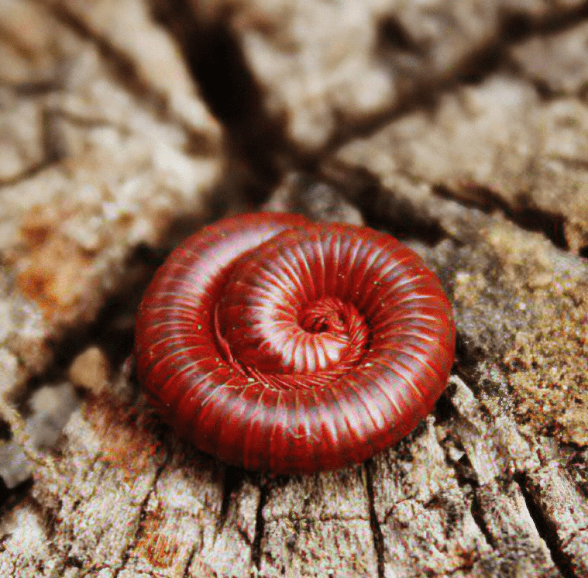

Home ›
Pests ›
Millipede
Millipede

Description
In Puerto Rico, many people call the millipede a “gongolí.” These are long-bodied arthropods with many legs that usually live outdoors in humid places with organic matter such as leaves, mulch, and decaying wood.
Are they dangerous?
- They generally do not bite or sting like some other pests.
- They can become a nuisance when they enter the home in large numbers, especially during wet weather.
- Some may release a defensive liquid that stains or may irritate sensitive skin if handled.
Why do they enter the home?
- Excess outdoor moisture near the structure.
- Rain and weather changes that drive them to seek shelter and drier surfaces.
- Mulch, leaf buildup, or wood against the house.
- Cracks or openings around doors, windows, baseboards, or entry points.
Common signs
- Millipedes crawling on floors and walls, especially near doors and entryways.
- Greater presence on rainy nights or around dawn.
- Activity near humid areas such as laundry rooms, entrances, or terraces.
Prevention
- Reduce moisture by fixing leaks, improving drainage, and avoiding standing water.
- Remove leaves, debris, and excessive mulch touching the structure.
- Seal cracks and improve door sweeps and window screens.
- Keep the perimeter clean and ventilated.
Professional control
Effective control focuses on environmental management such as moisture reduction and harborage correction, along with targeted treatment at entry points when needed. At Bugs Or Us PR, we evaluate your property, identify conditions that favor the pest, and apply safe strategies, always prioritizing the safety of your family, pets, and the environment.
Service in: Bayamón, Corozal, Dorado, Manatí, Morovis, Naranjito, Toa Alta, Toa Baja, Vega Alta, and Vega Baja.
Related pests
Request Professional Service
← Back to Home